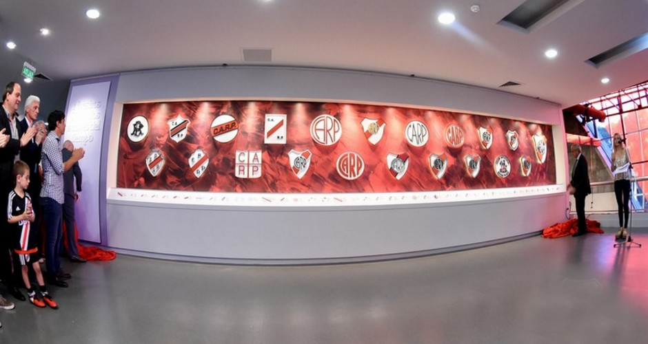
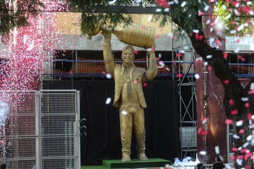
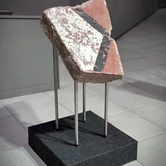
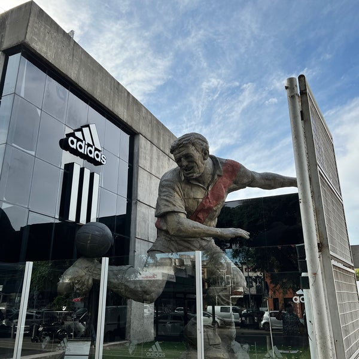
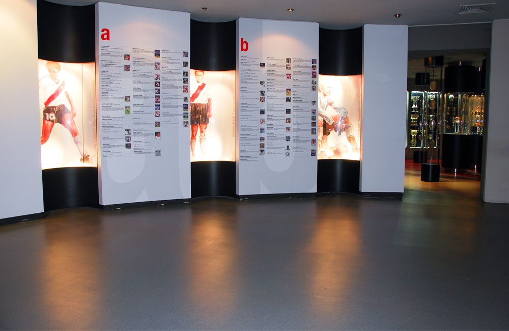

En el museo vas a poder ver las camisetas mas historicas de nuestra
Podras ver todos los diferentes escudos que utilizo River Plate a lo largo de la historia

Aqui se encuentra un monumento en recuerdo a la gloriosa delantera de la maquina.
Aca estan albergadas las copas conquistadas por la institucion.
Encontraras en las afueras del museo la estatua de Marcelo Daniel Gallardo.
Estan albergadas los restos de la historica pista de River que tanto lo ha carectizado a lo largo de la historia.
En nuestro museo se encuentra un tunel del tiempo por el cual vas caminando a travez de la historia de River Plate.
Junto a la estatua de Gallardo encontraras la estatua de Angel Amadeo Labruna.
En un sector del museo vas a poder encontrar una especie de abecedario donde se encuentran jugadores que jugaron en el club con cada letra